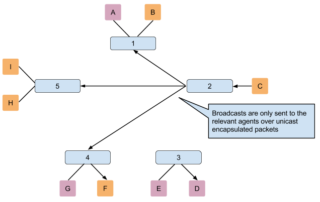
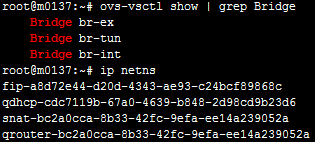
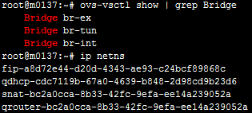
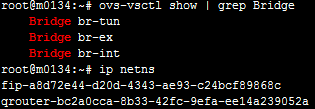
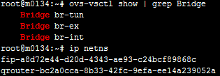
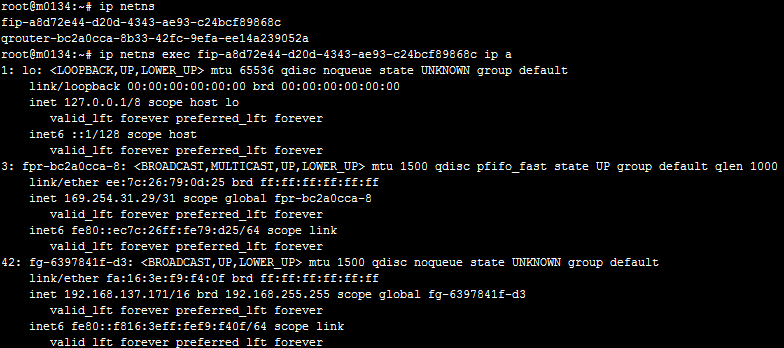

Enable DVR with DevStack¶
DVR is short for distributed virtual router, with this feature enabled packets flow with floating IP will no longer send to network node. It helps to alleviate network node’s pressure greatly when large amount of north-south data flow occurs. [1]
Brief Intro¶
In order to enable distributed router on each compute-node, Neutron-metadata-agent and Neutron-L3-agent are both needed. So we need to add q-meta and q-l3 as well as q-agt on each computer node’s local.conf file.

Warning
Currently devstack doesn’t support deploying DVR on GRE tunnel [2] , and tunnel type has been hard coded to vxlan mode, the following is a part of devstack’s code lib/neutron_plugins/ml2:
With DVR, floating IPs can be accessed directly from each compute node, but SNAT still need to be centralized to network node.

Configure Network Node¶
Here’s the neutron configuration part of local.conf on network node.
1 2 3 4 5 6 7 8 9 10 11 12 13 14 15 16 17 18 | # Neutron-vxlan-tunnel-DVR
##########################
ENABLED_SERVICES+=,q-svc,q-agt,q-dhcp,q-l3,q-meta,neutron
Q_FLOATING_ALLOCATION_POOL=start=192.168.137.166,end=192.168.137.253
Q_ROUTER_NAME=default_router
PUBLIC_NETWORK_GATEWAY=192.168.137.254
FLOATING_RANGE=192.168.0.0/16
FIXED_RANGE=10.1.1.0/24
FIXED_NETWORK_SIZE=256
NETWORK_GATEWAY=10.1.1.1
Q_PLUGIN=ml2
Q_ML2_TENANT_NETWORK_TYPE=vxlan
TUNNEL_ENDPOINT_IP=192.168.1.37
Q_DVR_MODE=dvr_snat
Q_SERVICE_PLUGIN_CLASSES=neutron.services.l3_router.l3_router_plugin.L3RouterPlugin
Q_ML2_PLUGIN_MECHANISM_DRIVERS=openvswitch,linuxbridge,l2population
|
Note
DVR mode can be dvr_snat , dvr or legacy. Legacy is Q_DVR_MODE ‘s default value, dvr_snat is for network node which enables snat router, and dvr mode is for compute node.
L2population is needed by DVR. The L2 Population driver enables broadcast, multicast, and unicast traffic to scale out on large overlay networks. This traffic is sent to the relevant agent via encapsulation as a targeted unicast. [3]
After Installation you might see 3 bridges and 4 namespaces on network node.
 

Namespace fip* is for floating IP accessing. qdhcp* is for allocating IP addresses. snat* is for SNAT function. qrouter* only serves VM in current host.
Configure Compute Node¶
The following is the neutron configuration part of local.conf on compute node
1 2 3 4 5 6 7 8 9 | # Neutron-vxlan-tunnel-DVR
##########################
ENABLED_SERVICES+= q-agt,q-l3,q-meta, neutron
Q_PLUGIN=ml2
Q_ML2_TENANT_NETWORK_TYPE=vxlan
TUNNEL_ENDPOINT_IP=192.168.1.34
Q_DVR_MODE=dvr
Q_SERVICE_PLUGIN_CLASSES=neutron.services.l3_router.l3_router_plugin.L3RouterPlugin
Q_ML2_PLUGIN_MECHANISM_DRIVERS=openvswitch,linuxbridge,l2population
|
After installation you might see 3 bridges and 2 namespaces.
 

fip* and qrouter* did the same job as two virtual devices on network node. We still need to do some configurations manually.
- Add an free physical device(NIC) to br-ex
$ sudo ovs-vsctl add-port br-ex eth1
- Allocate an IP for br-ex as a gateway
$ sudo ifconfig br-ex 192.168.137.253
- Add a route to floating network via fip*
Before we adding this route, we need to know fip’s IP address.
We use the IP on fg* .
$ sudo ip route add 192.168.0.0/16 via 192.168.137.171